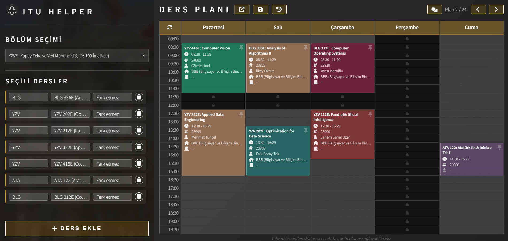

Bazı dersler, farklı bir seçmeli ders slotunda seçildiğinden dolayı kapatıldı.
Yeni ders planı oluşturma sayfamız yayınlandı! CRN girmeden, sadece dersleri seçerek olası tüm planları görüp filtreleyebilirsin.

CRN'lerle uğraşmadan ders planı oluşturmak için buraya tıkla!
Powered by ITU Helper SDK